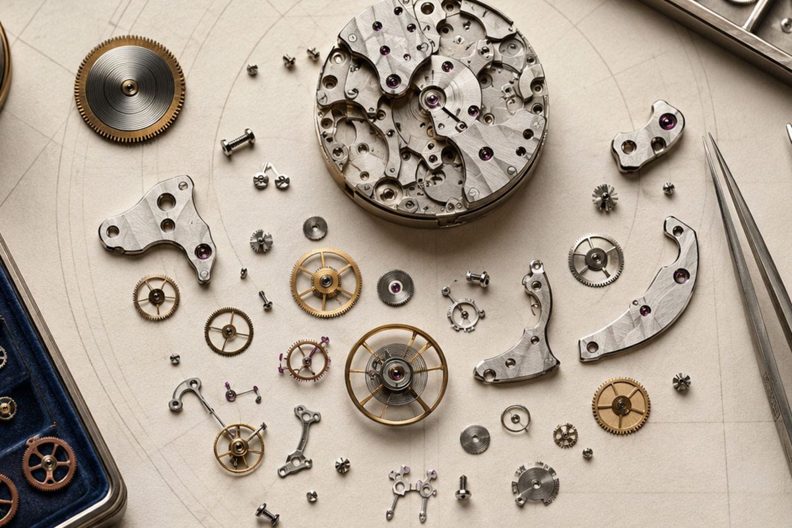

Mechanical
Open article ↗Issue No. 01
The patient
observer.
Twelve long-form notes for people who want to understand a watch before reducing it to a verdict.

Design · Mechanics · OwnershipInside this issue
Read in order or begin with the question closest to your wrist.
Dress
Open article ↗Reading a Watch Dial with Confidence
Dress
Open article ↗Dress Watch Proportions Explained
Dive
Open article ↗Dive Watch Essentials Beyond the Bezel
Field
Open article ↗Why Field Watch Design Endures
Chronograph
Open article ↗A Practical Guide to Chronograph Layouts
GMT
Open article ↗Understanding GMT Watches
Mechanical
Open article ↗Inside a Mechanical Movement
Field
Open article ↗Comparing Watch Case Materials
Dress
Open article ↗Building a Small, Useful Watch Collection
Dive
Open article ↗Daily Watch Care without Overthinking It
Mechanical
Open article ↗Service and Maintenance: A Calm Owner’s Guide
“The best watch knowledge changes what you notice, not what you are allowed to enjoy.”
Our journal avoids purchase pressure and guaranteed outcomes. It offers frameworks for observation, questions for comparison and routines for responsible care.